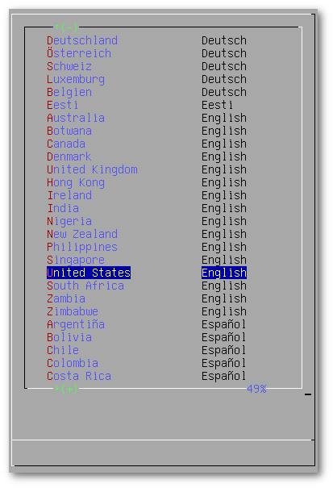
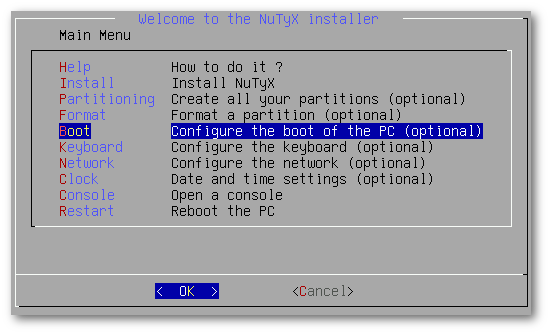
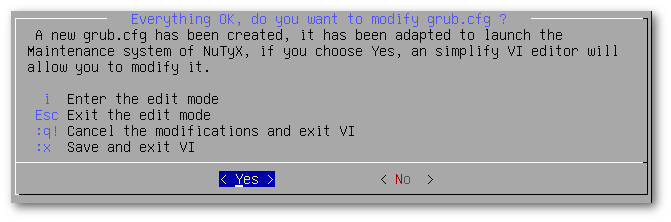

News | Information | Documentation | Installation | Packages | FAQ |
Downloads | Forum | Code | Screenshots | Wallpapers |
|
|
|
ForumSun Jun 25 16:07:12 2017 UTC General: Newstnut  New ISO with LIVE mode available New ISO with LIVE mode availableMon Jun 12 19:48:17 2017 UTC INSTALL: From GITtnut Re: Error in 2nd pass of "build your own"Sun May 28 22:40:06 2017 UTC INSTALL: From GITmyrddin  Re: Error in 2nd pass of "build your own" Re: Error in 2nd pass of "build your own"Sun May 28 17:59:21 2017 UTC INSTALL: From GITtnut  Re: Error in 2nd pass of "build your own" Re: Error in 2nd pass of "build your own"Fri May 26 07:30:33 2017 UTC INSTALL: From GITtnut Re: Error in 2nd pass of "build your own"Fri May 26 03:01:17 2017 UTC INSTALL: From GITmyrddin Error in 2nd pass of "build your own"Sun May 21 19:31:21 2017 UTC Off-Topic: Let's talk about youtnut Re: New nuty user Sun May 21 16:52:07 2017 UTC Off-Topic: Let's talk about youjohn  New nuty user New nuty user Thu May 18 12:19:48 2017 UTC General: Cards: The Package Managertnut  Re: where are CLI commands such as lspci Re: where are CLI commands such as lspciThu May 18 11:48:07 2017 UTC General: Cards: The Package Managermyrddin Re: where are CLI commands such as lspci |
Wed May 24 18:58:08 2017 UTC Setting up GRUBIf you haven't installed GRUB yet (by mistake or on purpose), it's not too late. As you will see, it's very simple to install GRUB separately. To be able to install GRUBIt is not necessary to have NuTyX installed; you can install GRUB to any other distribution. Restart the PC and boot the Iso  Once you arrive at the Main menu, choose "Boot Configure the boot of the PC (optional)" like this:  Select the partitionWe choose the partition where the GRUB application will be installed. Please note that the destination partition does not have to be on the disk you booted from. A menu appears giving you the chance to choose another disk. Grub is installedIt's now time to edit the grub.cfg file.   Be aware of the syntax for addressing disks and partitions. It's a bit special.
Be aware of the syntax for addressing disks and partitions. It's a bit special.
With grub 2.00, the first hard drive is called 0 and the first partition is 1. This means that the following example: set root=(hd0,5) defines the fifth partition on the first hard drive. In the following example, we can see 2 entries: one of them is for NuTyX. The first entry will start the NuTyX distribution located on the /dev/sda2 partition. The second entry will start Windows 10 located on /dev/sda3 # Begin grub.cfg # By default boot the first menu entry. set default 0 # Allow 5 seconds before booting the default. set timeout 5 |